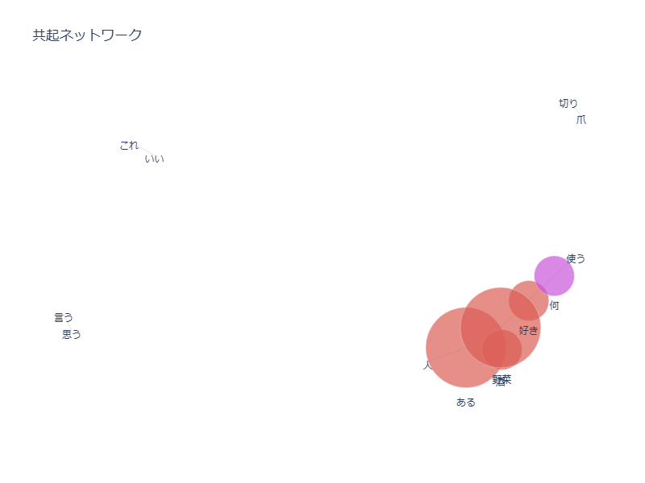
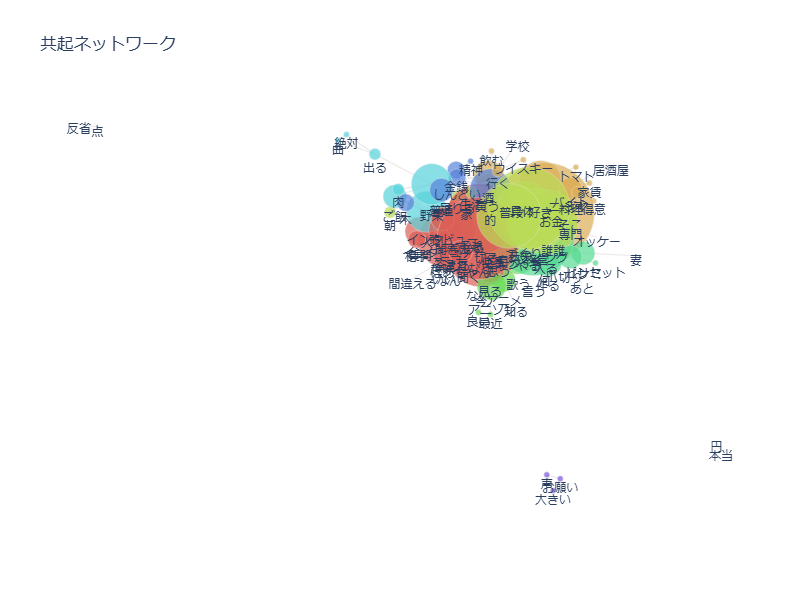

2025鎌倉共創プロジェクト
- 0411
メンバー決め
member:☆つなしま あやな うめ もも
インタビューに向けてのカメラ、マイクの使い方チェック
- 0418
インタビューの練習
参考動画
☆インタビューの注意点
- 質問攻めにしない
- 自然な会話を意識
- 相手が話しやすい相槌をうつ
- 0425
共起ネットワークの試運転

※この前の試し撮りした動画で作成した共起ネットワーク
# 除外する頻出上位の指定
stop_n_top = 0
# 除外する頻出回数以下の指定
stop_min_freq = 1
# 除外するノードのエッジ数の指定
min_edge_frequency = 0
これらの値をすべて０にした場合の共起ネットワークが以下の写真

☆共起ネットワークの注意点
- 相手のいった言葉を繰り返して、重要単語を抽出しやすくする
- です、ます、ある、何などの無意識に複数回出てしまう言葉は除去する